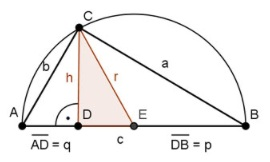

Pythagoras Aufgabe 81 Das Dreieck CDE hat eine Fläche von 2 cm2. Der Punkt E halbiert die Strecke AB. Die Strecke DE ist 1 cm lang. Berechnen sie die Längen der Hypotenuse c, der beiden Katheten a und b und der Hypotenusenabschnitte q und p.

Fläche des Dreiecks DEC DE * h A = -------- 2 1 * h 2 = ------- |*2 2 h = 4 cm Satz von Pythagoras im Dreieck DEC : r2 = DE2 + h2 = 1 cm2 + 42 cm2 = 17 cm2 |√ r = 4,1 cm c = 2 * r = 2 * 4,1 cm = 8,2 cm> AE = r q = AE - DE = 4,1 cm - 1 cm = 3,1 cm p = c - q = 8,2 cm - 3,1 cm = 5,1 cm Satz von Pythagoras im Dreieck DBC: a2 = p2 + h2 a2 = 5,12 cm2 + 42 cm2 = 42 cm2 |√ a = 6,5 cm Satz von Pythagoras im Dreieck ADC: b2 = q2 + h2 b2 = 3,12 cm2 + 42 cm2 = 25,6 cm2 |√ b = 5,1 cm